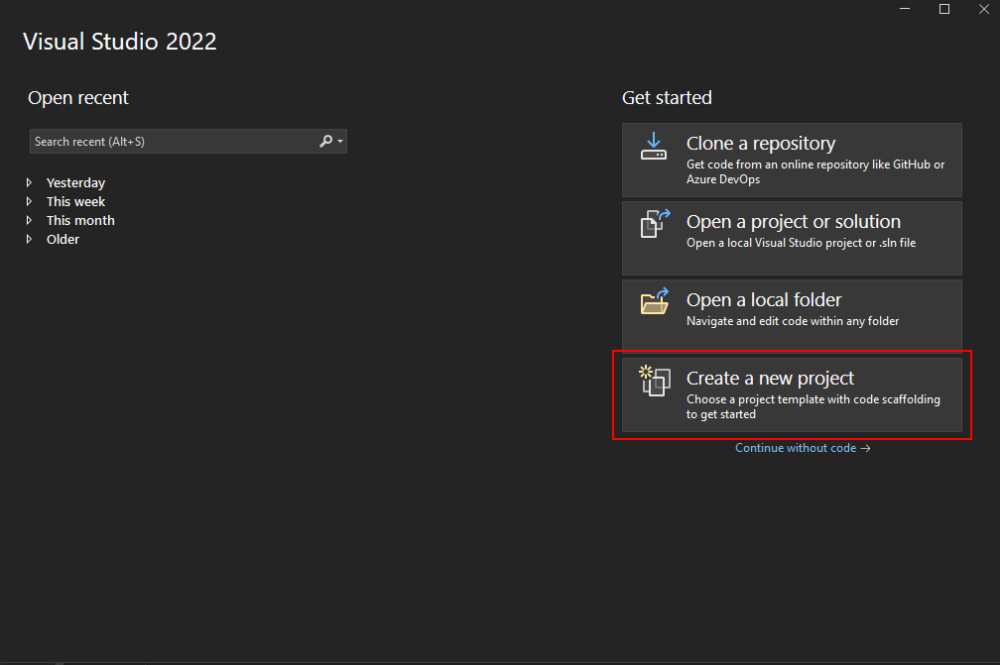
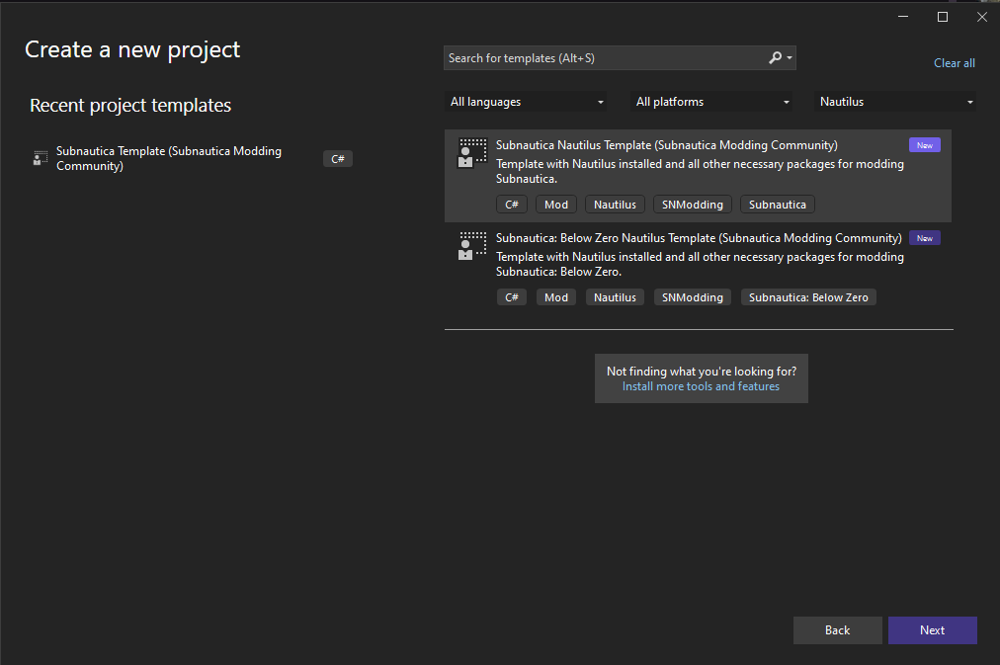
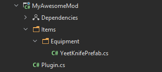
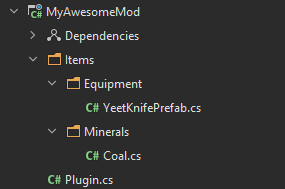
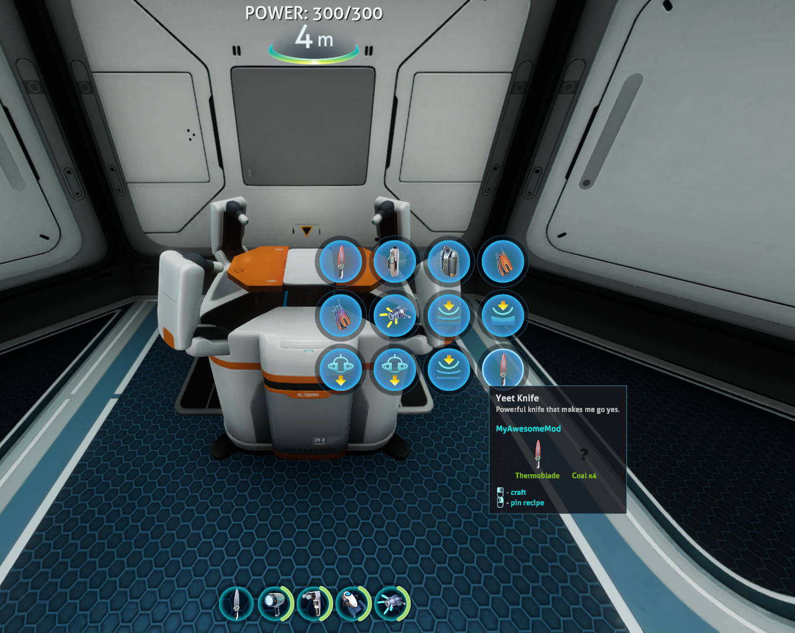

Simple Mod Guide
In this guide we will make a new knife using Nautilus that knock-backs enemies on-hit. Additionally, we will also create a new mineral and add it to our knife's recipe.
Firstly, we will need to setup a development environment. If you haven't already, check out our Development setup guide.
Now that we have a development environment, we can create a project using the Subnautica Templates.
- Open Visual Studio
- Click on "Create new project"
 - Search for "Nautilus", click on "Subnautica Nautilus Template" or "Subnautica: Below Zero Nautilus Template" depending on the game you're trying to mod then hit next 
- Choose a name for your project, then create the project
The new project should contain the following structure:
MyAwesomeMod/Items/Equipment/YeetKnifePrefab.cs
MyAwesomeMod/Plugin.cs

Note
It is recommended that you change the GUID of your mod. It will be automatically set to something like MyAwesomeMod, but for the sake of consistency it should look
more like com.author.myawesomemod. To do this, you must open up your project's csproj file (Right Click -> Edit Project File). Once it's open, add this tag to the
uppermost property group: <BepInExPluginGuid>com.author.modname</BepInExPluginGuid> and modify that to fit your mod.
Note
Please ensure that in your entry point class (the class that has a [BepInPlugin] attribute, usually called Plugin.cs) Nautilus is marked as a dependency if you use it.
To add the dependency, simply add the [BepInDependency("com.snmodding.nautilus")] attribute at the top of your entry point class.
You may find an example here.
For more information, visit the BepInEx docs.
This template contains the code of a functional knife that knock-backs enemies on strike. This knife can be found in the Modification station. Now that we have the code for the knife, we will make our new custom mineral.
Begin by creating a new directory under MyAwesomeMod/Items/ and name it Minerals. Create a new C# file by right clicking on the Minerals folder and call it Coal.cs.
The project structure now should look like this:

Our Coal mineral will be using the same model as the Nickel Ore. The Coal.cs file should end up looking something like this:
public class Coal
{
// To access the TechType anywhere in the project
public static PrefabInfo Info { get; private set; }
public static void Register()
{
Info = PrefabInfo.WithTechType("Coal", "Coal", "Coal that makes me go yes.");
var coalPrefab = new CustomPrefab(Info);
// The model of our coal will use the same one as Nickel's.
var coalObj = new CloneTemplate(Info, TechType.Nickel);
coalPrefab.SetGameObject(coalObj);
// register the coal to the game
coalPrefab.Register();
}
}
Now we need to register this new Coal object into the game. To do that, open the Plugin.cs file and edit it to call the Coal.Register() method
// Plugin.cs
private void InitializePrefabs()
{
Coal.Register();
YeetKnifePrefab.Register();
}
At this point, our Coal mineral is successfully added to the game. To add it as a recipe to our Yeet Knife, all we'll need to do is to edit the SetRecipe method
of the YeetKnifePrefab object.
// YeetKnifePrefab.cs
...
public static void Register()
{
var customPrefab = new CustomPrefab(Info);
var yeetKnifeObj = new CloneTemplate(Info, TechType.HeatBlade);
yeetKnifeObj.ModifyPrefab += obj =>
{
var heatBlade = obj.GetComponent<HeatBlade>();
var yeetKnife = obj.AddComponent<YeetKnife>().CopyComponent(heatBlade);
Object.DestroyImmediate(heatBlade);
yeetKnife.damage *= 2f;
};
customPrefab.SetGameObject(yeetKnifeObj);
// Recipe requires 1 Heat blade and 4 Coal.
var recipe = new RecipeData(new Ingredient(TechType.HeatBlade), new Ingredient(Coal.Info.TechType, 4));
customPrefab.SetRecipe(recipe)
.WithFabricatorType(CraftTree.Type.Workbench);
customPrefab.SetEquipment(EquipmentType.Hand);
customPrefab.Register();
}
Now we can build the project, then put the compiled .dll file into Subnautica/BepInEx/plugins/ and launch the game to run our mod.

As can be seen, the Coal does not have an icon and uses the default "?" sprite. To set an icon, we can simply call the WithIcon method on our PrefabInfo object.
// Coal.cs
public static void Register()
{
// Uses the Nickel Ore icon for the Coal item.
Info = PrefabInfo.WithTechType("Coal", "Coal", "Coal that makes me go yes.").WithIcon(SpriteManager.Get(TechType.Nickel));
var coalPrefab = new CustomPrefab(Info);
// The model of our coal will use the same one as Nickel's.
var coalObj = new CloneTemplate(Info, TechType.Nickel);
coalPrefab.SetGameObject(coalObj);
// register the coal to the game
coalPrefab.Register();
}
You can also set the icon to a .png file by using the ImageUtils class.
This reaches the end of this guide. Please check out our Tutorials section to learn more about this library.
For more examples, check out our Example mod.